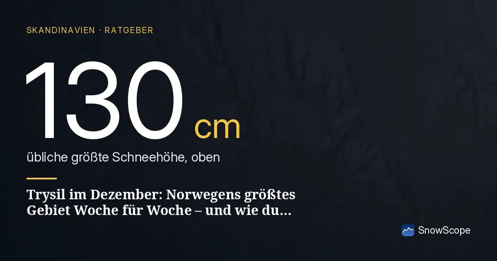

Trysil im Dezember: Norwegens größtes Gebiet Woche für Woche – und wie du weniger zahlst
Die Kernzahl: An einem typischen 15. Dezember liegen in Trysil an der Mittelstation (758 m) laut unserer Schneehistorie über 46 Winter 44 cm, und 83 % der Winter hatten dort in der Woche vom 15. bis 21. Dezember mindestens 30 cm. Ein solider Dezember für Norwegens größtes Skigebiet mit 101 km kartierten Pisten und 40 Liften.
Die Live-Schneeprognose für Trysil in der SnowScope-AppSchneehöhen, Pulverschnee-Alarme und 3D-Karte, gratis.
Anfang Dezember
Die erste Woche ist die schwache. Vom 1. bis 7. Dezember hatten nur 57 % unserer Winter 30 cm an der Mittelstation und 30 % im Tal (407 m). Der Gipfel (1109 m) ist mit 76 % sicherer. So weit im Norden sind die Dezembertage kurz – plane weniger Stunden auf der Piste und mehr auf dem Sofa.


Mitte Dezember
Vom 15. bis 21. Dezember sieht es gut aus: 83 % der Winter mit 30 cm an der Mittelstation und 89 % am Gipfel. Ein typischer 15. Dezember bringt 26 cm im Tal, 44 cm an der Mittelstation und 60 cm am Gipfel. Selbst ein mageres Jahr (1 von 10) hält an der Mittelstation 21 cm.
Weihnachtswoche
Die Weihnachtswoche ist die beste des Monats: 87 % der Winter hatten 30 cm an der Mittelstation und 93 % am Gipfel, und 59 % hatten oben 60 cm oder mehr. Das Tal holt spät auf: Der übliche erste Tag mit 30 cm dort ist der 18. Dezember.
Früher und heute
Das Dezembermittel an der Mittelstation fiel von 52 cm in den ersten 15 Wintern auf 41 cm in den letzten 15, und der Anteil der Weihnachtswochen mit 30 cm im Tal sank von 87 % auf 60 %. Oben hielt es besser: 100 % und 87 %.
Der letzte Winter zeigt beide Seiten: 62 cm am Gipfel am 15. Dezember, aber nur 4 cm im Tal am 24. Dezember.
Die Rechnung
Trysil verkauft Skipässe mit dynamischen Preisen im offiziellen Onlineshop des Betreibers: Der Preis hängt vom Datum ab und davon, wie früh du kaufst. Am 13. November 2026 konnten wir auf der offiziellen Seite keinen festen Betrag ablesen, deshalb nennen wir keinen. Die Faustregel bei solchen Preisen ist einfach: online, früh und für Termine außerhalb der Weihnachtsferien kaufen.
Gegen Sälen
Sälen, jenseits der Grenze in Schweden, ist die andere große Dezember-Wahl für Familien. Es liegt tiefer und flacher: Unsere Historie hat einen Wert für das ganze Gebiet, 28 cm an einem typischen 15. Dezember, und 48 % der Winter mit 30 cm in der Woche vom 15. bis 21. Dezember. Trysils Mittelstation liegt klar darüber, sein Gipfel noch mehr.
Tipps für Skifahrer
- Wähl den 15. bis 21. Dezember oder die Weihnachtswoche: Der Anteil der Winter mit 30 cm an der Mittelstation steigt von 57 % in der ersten Woche auf 83 % und 87 %.
- Kauf den Skipass so früh wie möglich online; bei dynamischen Preisen kosten späte Käufe für beliebte Tage mehr.
- Plane die kurzen Dezembertage ein: mit dem ersten Licht starten und die Mittagspause kurz halten.
- Pack für echte Kälte: Der Dezember im norwegischen Binnenland kann sehr frostig sein.
Weitere Karten (externe Seiten)
Quellen und Nachweise
- Trysil: official lift-pass page of the operator (prices by date; no fixed price quoted), checked 13 November 2026 www.skistar.com/en/winter/skipass/buy-skipass/lift-pass-trysil/
- Sälen: official lift-pass page of the operator (prices by date; no fixed price quoted), checked 13 November 2026 www.skistar.com/en/winter/skipass/buy-skipass/lift-pass-salen/
Zu diesen Zahlen
Schneewerte: SnowScope-Schneehistorie, 46 vergangene Winter (1980-81 bis 2025-26) auf den Höhen des Skigebiets, höhenkorrigiert (eine Schätzung für eine Fläche, keine Meldungen des Skigebiets); „guter Schnee“ = im Wochenmittel 30 cm oder mehr am Boden. Karte: unsere übliche Schneehöhe am 15. Dezember, nach Höhe auf das Gelände verteilt. Pisten und Lifte: OpenSkiMap-Kartierung. Skipasspreise: offizielle Preislisten der Skigebiete, geprüft am 13. November 2026; Preise können sich ändern.
Offizielle Lawinenlageberichte: Varsom (NVE)
Diesen Bericht zitieren
Für Forschung, Lehre oder Presse: Zahlen und Grafiken sind unter CC BY 4.0 mit dieser Quellenangabe frei nutzbar.
SnowScope (2026), Trysil im Dezember: Norwegens größtes Gebiet Woche für Woche – und wie du weniger zahlst, https://snowscope.app/blog/de/2026/11/trysil-december-skiing-norway-budget-dark-days.html, abgerufen am 2026-11-14
SnowScope (Atlas Labs). (2026, November 14). Trysil im Dezember: Norwegens größtes Gebiet Woche für Woche – und wie du weniger zahlst. SnowScope snow reports. https://snowscope.app/blog/de/2026/11/trysil-december-skiing-norway-budget-dark-days.html
BibTeX
@misc{snowscope2026trysildecemberskiingnorw,
author = {{SnowScope (Atlas Labs)}},
title = {Trysil im Dezember: Norwegens größtes Gebiet Woche für Woche – und wie du weniger zahlst},
year = {2026},
month = nov,
howpublished = {\url{https://snowscope.app/blog/de/2026/11/trysil-december-skiing-norway-budget-dark-days.html}},
note = {Published 2026-11-14 13:29 UTC; accessed 2026-11-14}
}· CC BY 4.0 · Methoden, Daten und Werkzeuge →
Trysil: Schnee und Temperatur nach Höhe, dieser Winter vs letzter (Werkzeuge) →
Trysil folgen
Gratis: eine Nachricht, wenn Neuschnee kommt, und jeden Morgen die Vorhersage.